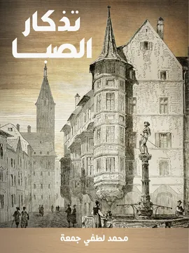

تذكار الصبا: ذكرى ١٩ مارس

قراءة عربية أصلية محددة النطاق في الصفحات 13 إلى 18 من ملف PDF المرتبط، وليست تلخيصا كاملا للكتاب. نناقش ما تدعمه هذه المقاطع فقط.
ذكرى ١٩ مارس: يوم غيّر حياة المؤلف بعد ثلاثين عامًا
يفتتح محمد لطفي جمعة كتابه باستعادة يوم ١٩ مارس بعد ثلاثين عامًا، ذلك اليوم الذي ما يزال يمر به فيذكّره حادثة من أهم حوادث حياته وأثرًا من معالم الطريق في سبيل وجوده ونقطة ارتكاز في دائرة تكوينه. يتقلب التاريخ في وجدانه: تارة يبدو كوكبًا قطبيًّا ثابتًا ونورًا هاديًا في ديجور الليالي، وطورًا سهمًا من كنانة القدر أصاب فأدمى واستحال انتزاعه، ومرة كأس خمر معتقة سبقتها فرحة وصحبتها نشوة وتلتها سكرة وأعقبتها صحوة مريرة. ويتساءل جالسًا يسند رأسه بين راحتيه: ترى كيف كانت تكون الحياة لو لم يقع في ذلك النهار ما وقع؟ وهل لو عاد إلى ذلك التاريخ وخير بين قبوله واقتحامه لقبل عليه وعليها أم أعرض عنهما جميعًا؟ ثم يبدأ سرد ما قبل اللقاء: رحلة البحر على الباخرة الألمانية «البرنس هنريش»، وقد تغير وجه البحر فجأة وغضبت الطبيعة حتى صاروا كالريشة في مهب الريح، وهو وحيد على ظهرها لا صديق ولا رفيق، وقد جمع شجاعته للرحلة بعد نضال طال من فبراير إلى آخر مارس، وغادر مصر والربيع في أوج ازدهاره والمسألة صراع في صدره بين الحياة والموت والنور والظلام.
زاوية وحدود القراءة
قراءة موجزة من ص ١٣ إلى ص ١٨ من أصل ٢٤٢ صفحة، تعرض افتتاحية الكتاب وبداية السرد، لا الكتاب كاملًا.
الطبعة والقراءة
هذه النسخة من الكتاب صادرة ومتاحة مجانًا من مؤسسة هنداوي بشكل قانوني؛ حيث إن نص الكتاب يقع في نطاق الملكية العامة تبعًا لقوانين الملكية الفكرية.
تنزيل PDF المجاني ↓ القراءة والمصدر الرسمي ↗